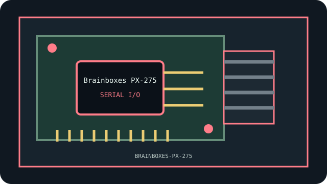

[ INDIVIDUAL COMPONENT // SERIAL I/O ]
Brainboxes PX-275
Eight RS-232 ports via included DB25 cable; 110–921,600 baud; PCIe. This model-specific archival record distinguishes documented product facts from platform-level compatibility assumptions.

MODEL SCOPE: Brainboxes PX-275. Confirm board revision, exact product label, firmware, bracket, and accessories before installation.
Reference specifications
| Model identifier | Brainboxes PX-275 |
|---|---|
| Host bus | PCIe x1 |
| Interfaces and protocols | Eight RS-232 ports via included eight-port DB25 cable; 110–921,600 baud per product page. |
| Controller / chipset | Brainboxes PCIe serial controller |
| Driver and operating-system notes | Brainboxes Windows driver; Linux by chip/kernel |
| Compatibility and archival notes | PX-275 is an eight-port PCIe RS-232 card. Manufacturer lists Windows 10 support and says Windows 11 is not supported; preserve the supported driver. |
Compatibility, care & archival notes
- Use documented pinout and RS-232 levels; DB9 alone does not indicate RS-422/485.
- Record PCB/revision identifiers, subsystem IDs, firmware and supplied accessories; OEM and retail versions may differ.
- Retain a verified backup and known-good driver/firmware before changing a working legacy configuration.
Sources & further reading
- Brainboxes — Brainboxes PX-275Vendor reference for the named model or family; confirm exact revision and current archived manual.
- PCI-SIG — PCI Express specificationsBus terminology; physical slot fit does not guarantee electrical compatibility.
- Linux kernel — PCI support documentationGeneral enumeration reference, not a promise of support for every device feature.